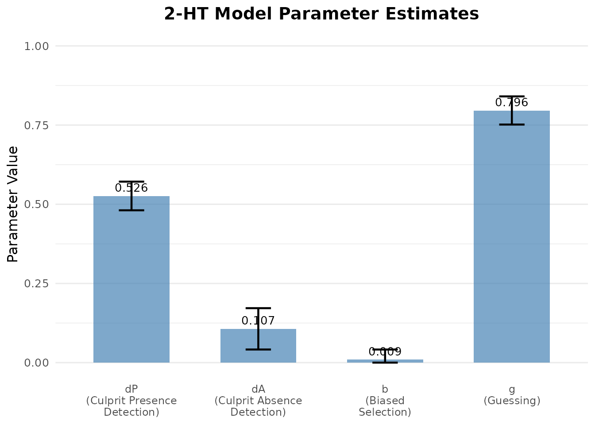
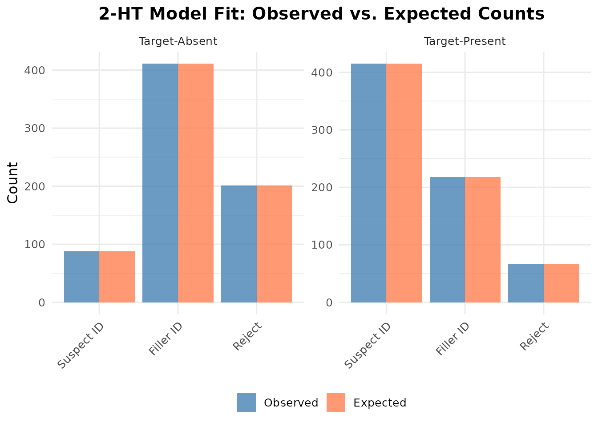

Winter 2-HT Model
Modeling Full Lineup Outcomes
Colin G. Tredoux
Tamsyn M. Naylor
2026-10-30
Source:vignettes/winter_2ht_model.Rmd
winter_2ht_model.RmdAcknowledgement. Large language models supplied by Anthropic and OpenAI were used in preparing this vignette, to assist with checking code, testing the veracity of the approaches described, and on occasion editing the text. Responsibility for the content rests with the authors.
Introduction
This vignette demonstrates the two-high-threshold (2-HT) model for lineup data introduced and validated by Winter, Menne, Bell and Buchner (2022).
Attribution. The model, its parameterisation and its validation are theirs; they report four experiments, one targeting each parameter. The implementation here was written from the published model equations and adapted into this package’s data conventions. No code was reused.
The general approach
The model is a multinomial processing tree (MPT). The idea behind that family is worth stating, because it is different from signal detection theory and the two are easily confused.
Signal detection theory posits a continuous evidence variable and a criterion placed on it. An MPT instead posits a small number of discrete latent states, each reached with some probability, with the observable response determined by which state the witness lands in. The parameters are the branching probabilities of that tree. Neither is “the” right description; they answer different questions, and the MPT has the practical advantage that its parameters map onto processes one can manipulate experimentally — which is what Winter et al. did to validate them.
For a lineup the tree runs as follows. A witness either detects the state of the lineup or does not. If they do not detect, they either select someone because the suspect stands out, or they guess, or they reject.
Formally, for a lineup of size :
Target-present lineups
Target-absent lineups
The four parameters
dP — detection of culprit presence. The probability that a witness viewing a target-present lineup recognises the culprit. This is the memory parameter for guilty lineups: a witness in this state identifies the suspect for the right reason.
dA — detection of culprit absence. The probability that a witness viewing a target-absent lineup recognises that the culprit is not there. Note this is a separate process from dP, which is what makes the model “two-high-threshold”: detecting presence and detecting absence are not two ends of one continuum but two distinct states, either of which may fail. A witness may fail to detect absence without thereby detecting presence.
b — biased suspect selection. Given that no detection occurred, the probability of choosing the suspect because the suspect stands out — not because of memory, and not by chance. This is the lineup fairness parameter, and it is treated in detail below.
g — guessing-based selection. Given no detection and no bias, the probability of choosing someone anyway rather than rejecting. This is willingness to choose, and in a fair lineup the choice falls on the suspect with probability and on a foil with probability — which is why those fractions appear in the equations.
Read together: dP and dA are about memory, g is about willingness to choose, and b is about the lineup itself. Separating those three is the point of the exercise, since an identification rate confounds all of them.
The implementation in r4lineups accepts either raw data (data frame) or aggregated counts.
Data format
We use the built-in lineup_example dataset, which
already contains the required columns:
1. Fit the model using counts
First, convert the data to the 2 × 3 count format expected by
fit_winter_2ht():
counts <- c(
n_tp_suspect = sum(lineup_example$target_present & lineup_example$identification == "suspect"),
n_tp_filler = sum(lineup_example$target_present & lineup_example$identification == "filler"),
n_tp_reject = sum(lineup_example$target_present & lineup_example$identification == "reject"),
n_ta_suspect = sum(!lineup_example$target_present & lineup_example$identification == "suspect"),
n_ta_filler = sum(!lineup_example$target_present & lineup_example$identification == "filler"),
n_ta_reject = sum(!lineup_example$target_present & lineup_example$identification == "reject")
)
fit <- fit_winter_2ht(counts, lineup_size = 6)
fit$parameters
#> dP dA b g
#> 0.52617951 0.10669261 0.00927434 0.796103592. Model diagnostics and plots
plot_2ht_parameters(fit)
plot_2ht_fit(fit)
The second plot is the one to check before interpreting anything: it compares observed response proportions against those the fitted model predicts. Visible discrepancies mean the model is not describing the data, and the parameters should not be read as though it were.
3. Bootstrap confidence intervals
set.seed(123)
boot_fit <- boot_winter_2ht(
counts,
lineup_size = 6,
nboot = 200,
conf_level = 0.95,
method = "percentile"
)
boot_fit$ci
#> Lower Upper
#> dP 0.48255377 0.56813183
#> dA 0.03540606 0.17454599
#> b 0.00000000 0.04342048
#> g 0.75086446 0.84055629The bootstrap intervals are preferable to the normal approximation
for these parameters, and plot_2ht_parameters() uses them
when given a bootstrap object:
plot_2ht_parameters(boot_fit)All four parameters are probabilities bounded in [0, 1], so an
estimate close to a boundary — b here — has a normal
interval that runs outside the parameter space. The percentile interval
cannot.
For larger datasets, increase nboot to 1000 or more for
stable intervals.
4. What b tells you about lineup fairness
This is arguably the most useful thing the model does, and it deserves more than a line.
Classical lineup fairness measures — Tredoux’s E′, functional size, the proportion of mock witnesses choosing the suspect — are computed from mock-witness data: people who never saw the culprit, choosing from a description. They ask whether the suspect stands out.
The 2-HT model answers the same question from the witness
data themselves, with no mock-witness study required. Look
again at where b sits in the tree: it is the probability of
choosing the suspect given that no detection occurred and before any
guessing. A witness in that state has no memorial basis for
choosing the suspect, so if they do, it is because the lineup pointed
them there.
In a perfectly fair lineup, b = 0: a non-detecting
witness who chooses lands on the suspect with probability
,
purely by chance, and that is already captured by the g/L
term. Any b above zero is a measure of
unfairness, on a probability scale, with a confidence
interval.
Does it work?
That is a checkable claim rather than a promise, so here it is checked against two established measures computed from the same data:
-
E′ (Tredoux, 1998),
esize_T(), the inverse-Simpson index over choices across all six members. It measures the effective number of functioning alternatives. Note where E′ comes from here: the target-absent lineups. A target-absent lineup is functionally a mock-witness lineup — the witness has no culprit to recognise — so the choice distribution across members gives E′ without running a separate mock-witness study. See the main vignette on the small-sample properties of that estimate, which are not negligible.
scenarios <- list(
"Fair: foils match suspect" = rep( 0.0, 5),
"Uniformly weak foils" = rep(-1.6, 5),
"Uneven foils, suspect typical" = c( 1.6, 0.9, -1.5, -2.5, -3.5),
"Uneven foils, one dominant" = c( 2.5, -3.0, -3.0, -3.0, -3.0)
)
fairness <- do.call(rbind, lapply(names(scenarios), function(nm) {
d <- as.data.frame(simulate_lineup_data(
n_tp = 1500, n_ta = 1500, d_prime = 1.4, c_criterion = 0.9,
lineup_size = 6, conf_levels = 5,
foil_bias = scenarios[[nm]], seed = 101
))
fit_s <- fit_winter_2ht(d, lineup_size = 6,
target_present = "target_present",
identification = "identification")
ta <- d[!d$target_present, ]
chosen <- ta$lineup_member[ta$lineup_member > 0]
E <- esize_T(table(factor(chosen, levels = 1:6)))
data.frame(
`Lineup` = nm,
`b (2-HT)` = round(fit_s$parameters[["b"]], 3),
`E' (Tredoux)` = round(E, 2),
`dP (2-HT)` = round(fit_s$parameters[["dP"]], 3),
check.names = FALSE
)
}))
knitr::kable(
fairness, row.names = FALSE,
caption = "The 2-HT bias parameter against effective size (Tredoux, 1998), on the same simulated data (1500 target-present and 1500 target-absent lineups, nominal size 6)."
)| Lineup | b (2-HT) | E’ (Tredoux) | dP (2-HT) |
|---|---|---|---|
| Fair: foils match suspect | 0.000 | 6.00 | 0.453 |
| Uniformly weak foils | 0.251 | 1.25 | 0.586 |
| Uneven foils, suspect typical | 0.000 | 2.00 | 0.213 |
| Uneven foils, one dominant | 0.000 | 1.06 | 0.067 |
Weakening all the foils uniformly — the first two rows — makes
b rise and E′ fall together, which is the expected
behaviour.
But b and E′ are not the same measure, and the
last two rows show it. With uneven foils, E′ collapses to 2.00
and then 1.06, because a single dominant foil absorbs most of the
choices and the lineup has almost no functioning alternatives.
b stays at zero throughout — correctly, because in those
lineups the suspect is chosen below chance and is, if anything,
protected by the arrangement. b measures whether the
suspect stands out; E′ measures how many
alternatives are functioning. Report both.
The practical value of b is that it is available
when mock-witness data are not: a lineup already
administered to real witnesses can be assessed for suspect bias
retrospectively.
A caution that comes with it
Notice the dP column across the first two rows. Apparent
detection of culprit presence rises as the foils are weakened
uniformly. That is not better memory. When the suspect stands out, the
culprit in a target-present lineup stands out too, so more witnesses
land on them — and the model, which has no way of knowing why, partly
books this as detection.
So an unfair lineup does not merely inflate false identifications; it
inflates the apparent memory performance of the procedure that produced
them. Report b alongside dP, never
dP alone. A high dP from a lineup
with a high b is not evidence of a good procedure.
Technical Details
Estimation
Parameters are estimated by maximum likelihood over the six observed
cell counts (three responses by two lineup types), using the multinomial
likelihood implied by the equations above. The model has four free
parameters against five free cells, leaving one residual degree
of freedom — so it is testable, but only just. Standard errors
come from the numerically differentiated Hessian at the optimum, and
fit_winter_2ht() reports AIC, BIC and the log-likelihood,
all of which are well defined here because this is a genuine
maximum-likelihood fit.
Note the contrast with fit_lineup_models() in
vignette("lineup_memory_models"), which minimises Pearson
chi-square rather than maximising a likelihood, and for which AIC and
BIC are therefore returned as NA. The two should not be
compared by information criteria.
Identifiability
dA is identified almost entirely by rejections: it is
the probability of correctly concluding the culprit is absent, and a
witness in that state rejects. If very few witnesses reject, the
likelihood is close to flat in dA and the fit fails.
fit_winter_2ht() checks for this and stops with a message
naming the cause. In simulated data the usual reason is a decision
criterion set too liberally — see
vignette("simulation_power_analysis") on why
c_criterion = 0 is not a neutral value.
Confidence intervals
fit_winter_2ht() returns standard errors, from which
normal intervals can be formed, but all four parameters are
probabilities bounded in [0, 1] and a normal interval around an estimate
near a boundary runs outside that range. Prefer
boot_winter_2ht(), which gives percentile intervals that
cannot. The plotting function uses whichever it is given.
Assumptions
- Each witness contributes one lineup decision, so the six cells partition the sample.
- Target-present and target-absent lineups are independent samples.
- The detection processes are all-or-none: a witness either detects or does not, with no partial information. This is the “high threshold” assumption, and it is what distinguishes the model from a signal detection account.
-
lineup_sizeis the number of functioning alternatives. In a lineup with null foils the nominal size overstates this, and since appears directly in the equations,gandbwill be biased. Checklineup_table()for null foils before fitting.
References
Malpass, R. S. (1981). Effective size and defendant bias in eyewitness identification lineups. Law and Human Behavior, 5(4), 299-309.
Tredoux, C. G. (1998). Statistical inference on measures of lineup fairness. Law and Human Behavior, 22(2), 217-237.
Winter, K., Menne, N. M., Bell, R., & Buchner, A. (2022). Experimental validation of a multinomial processing tree model for analyzing eyewitness identification decisions. Scientific Reports, 12, 15571.
Further Reading
-
?fit_winter_2ht,?boot_winter_2ht,?plot_2ht_parameters -
vignette("model_comparison")for fitting this model alongside EIG and full ROC - The main vignette for the classical fairness measures that
brecovers